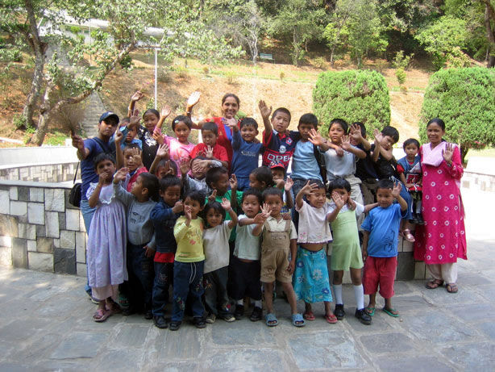

I decided to use our trip to collect money for poor children in Nepal. We want to donate that money to the "Sunrise Children's Association INC" (www.scai.org.au)

SCAI is a young and dynamic charity, established in Australia in July 2005 by three local women with a mission to provide a brighter future to impoverished children and youth in Nepal. It now cares for over seventy children at Sunrise Orphanage in Nepal, who may have otherwise faced a bleak future of starvation, poverty, slavery, trafficking, being forced into armed conflict, or simply end up on the streets of the increasingly crowded Kathmandu. A video of the SCAI is on the right side!
Just 20 EUR per month are enough to cover the basic needs of one child. We are happy about every amount you can give. Ralf and I will visit the location of SCAI in Kathmandu and hand over the money personally.
Contact me at christian@theisen.net and tell me the amount you would like to donate. I will put you on a donators list.